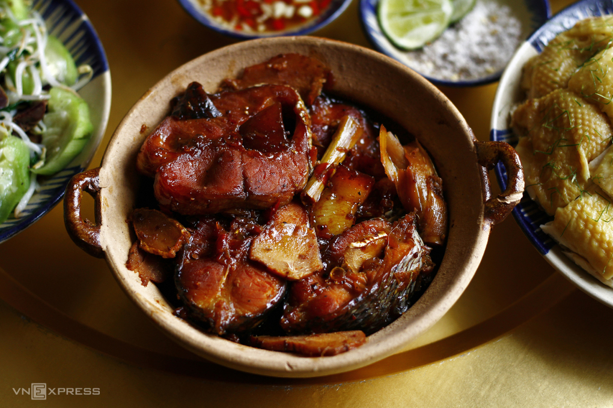

Mâm cơm hè người Hà Nội xưa đãi khách
Gà luộc, lòng gà xào mướp, canh sấu chua, cá kho riềng kích thích vị giác vào ngày nóng, được ưu ái đưa vào thực đơn đãi khách của người Hà Nội xưa.
1. Nguyên liệu: Mâm cơm dành cho khẩu phần 6-8 người.
1 con gà mái ta thả vườn (1,4-1,5 kg)
600 gr cá
300 gr thịt ba chỉ (dùng kho cá và cuốn tôm)
300 gr tôm tươi
250 gr thịt nạc vai
5 quả sấu
5 quả trứng
2 - 3 quả mướp hương
200 gr giá đỗ
Hành, riềng, ớt, chanh, hành hoa, mùi tàu
Gia vị: Mắm, muối, đường, mì chính, hạt nêm, hạt tiêu, nước hàng
Rau sống (xà lách, mùi...)
B. Thực hiện:
1. Gà mái ghẹ luộc:
Một đĩa gà luộc vàng ươm, mọng nước, ngọt thơm luôn là món ăn được ưu ái trong thực đơn mỗi khi nhà có khách quý. Chọn được gà mái ghẹ là ngon nhất như từ xa xưa dân gian đã lưu truyền câu: ''Cơm chín tới, cải ngồng non, chim ra ràng, gà mái ghẹ''. Gà mái ghẹ là những con gà non, chuẩn bị đẻ lứa đầu, thịt mềm thơm, nhiều chất bổ dưỡng.
Cách làm:
Gà mái ghẹ sơ chế, chà xát chanh và muối hạt hoặc xát hỗn hợp rượu gừng đập dập khử mùi rồi rửa nhiều lần cho sạch. Cắt vài lát nghệ già xát lên da trước khi luộc để có màu vàng đẹp mắt.
Cho gà vào nồi đế dày, đổ ngập nước lạnh hoặc tối thiểu 2/3 con gà để không bị thâm. Thêm gừng, hành khô và chút muối, hạt nêm để gà ngọt nước. Đun cho gà nóng dần lên, khi nước sôi hớt bỏ bọt. Sau đó, hạ lửa nhỏ lăn tăn luộc gà, dùng muôi múc xối nước lên phần gà chưa ngập nước. Luộc tầm 5 - 7 phút tắt bếp, đậy vung và om gà 25 - 30 phút để gà ngậm nước chín đều từ từ, không bị đỏ xương, không bị rách da.
<>Gà sau khi luộc xong vớt ra ngâm vào âu nước đá để da giòn. Khi nguội vớt ra để ráo nước. Lúc này gà lên màu vàng ươm đẹp mắt. Khi gà nguội dùng dao sắc, nặng tay chặt miếng vừa ăn, xếp vào đĩa, rắc lá chanh thái chỉ lên trên. Chú ý không chặt, lọc thái khi gà còn nóng vì làm thịt gà chảy nước, giảm độ ngọt. Hơn nữa làm da và thớ thịt bung ra, thiếu thẩm mĩ.2. Cá kho riềng:
Dù đi xa chân trời góc bể, nhiều người vẫn nhớ nhất hương vị quê nhà, nhớ nhất là món cá kho giản dị, mộc mạc mà đậm đà. Cá kho ăn bất kể mùa nào trong năm cũng hao cơm cả. Tùy theo sở thích có thể kho cá cùng củ cải, su hào, măng củ, trám xanh, dưa chua... đều ngon.
Cách làm:
Cá trắm sơ chế, chà xát chanh và muối hạt khử tanh rồi rửa thật sạch, để ráo hoặc thấm khô. Sau đó, ướp cá với 1 thìa canh muối hạt trong 30 phút cho cá cứng và đậm vị.
Riềng rửa sạch, lấy 1/2 thái lát, còn 1/2 giã nát; khế chua rửa sạch, thái lát hình ngôi sao; ớt rửa sạch; hành khô rửa sạch, giữ cả phần vỏ hành rửa sạch để kho sẽ dẻo bùi, thơm thơm.
Ướp cá với nước mắm, muối, nước hàng, hạt tiêu cùng riềng giã tối thiểu trong 1 giờ. Nếu ướp lâu hơn khi kho càng ngon.
Cá kho bằng nồi đất hoặc nồi gang là ngon nhất. Xếp riềng và khế thái lát xuống đáy nồi. Lần lượt cho cá, thịt ba chỉ (100gr), riềng lát, khế lát, ớt đan xen rồi trên cùng rải riềng.
Để có nồi cá ngon nên kho 2 - 3 lần lửa cá sẽ đậm đà, săn chắc và thơm ngon, xương nhừ. Lần kho 1: Bật lửa tocho cá sôi rồi chêm nước sôi già vào để khoảng 5 phút, hớt bỏ bọt rồi hạ lửa liu riu trong khoảng 45 - 60 phút. Lúc này, nêm nếm lại gia vị cho phù hợp, cá kho nên đậm vị. Tắt bếp để cá nguội, đây cũng là lúc giúp ''cá hồi'' và dẻo hơn. Sau đó, tiếp tục kho lửa lần 2, 3 với cách tương tự. Chú ý thêm nước sôi vào khi nước kho gần cạn, tránh không để cá bén cháy. Kho cá tối thiểu 3 tiếng, càng kho lâu cá càng săn chắc, đậm đà.